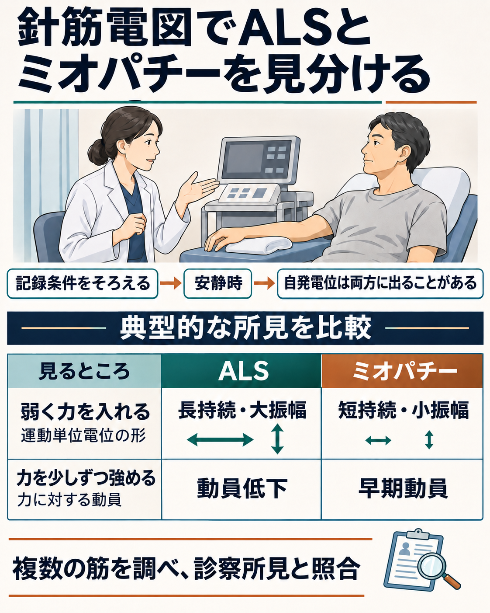

針筋電図でALSとミオパチーを見分ける
図の表示枠をスクロールすると、原寸で全体を見られます。

図は典型的な所見の傾向です。矢印は電位の持続時間と振幅を概念的に比較したものです。測定波形、実測値や診断の閾値は示していません。所見の例外、検査の条件、出典は記事本文をご覧ください。
図の表示枠をスクロールすると、原寸で全体を見られます。

図は典型的な所見の傾向です。矢印は電位の持続時間と振幅を概念的に比較したものです。測定波形、実測値や診断の閾値は示していません。所見の例外、検査の条件、出典は記事本文をご覧ください。